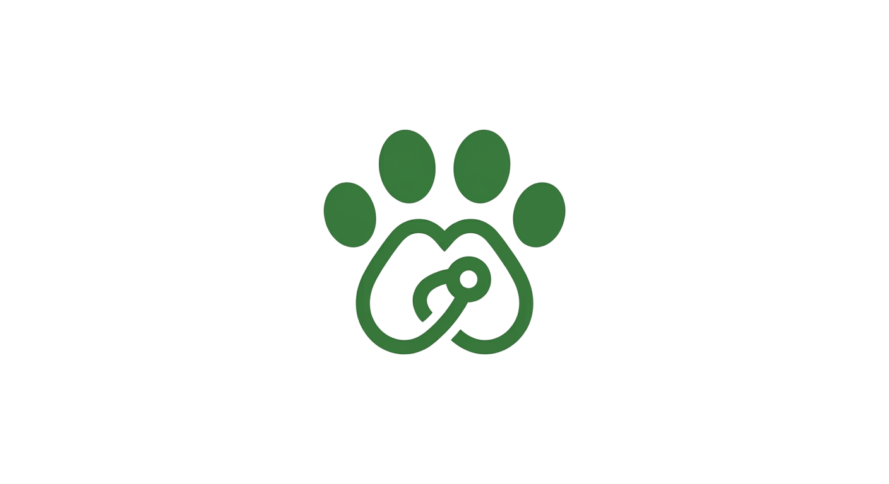

Rocky
Tipo: Perro — 2 años
Sector: Kennedy Central
Muy juguetón, ya está esterilizado. Se lleva bien con niños.
Contacto: Fundación Huellas Kennedy — 300 111 2222

Conoce mascotas disponibles para adopción, o publica si tienes una a cargo
Tipo: Perro — 2 años
Sector: Kennedy Central
Muy juguetón, ya está esterilizado. Se lleva bien con niños.
Contacto: Fundación Huellas Kennedy — 300 111 2222
Tipo: Gato — 1 año
Sector: Timiza
Muy tranquila, ideal para apartamento. Vacunada al día.
Contacto: 310 333 4444